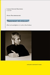

Anna Gabriella Salomonsson
PhD i litteraturvetenskap vid Linnéuniversitetet, Växjö, 2017.
| Född: | 1969-02-20 Sankt Olov fs, Skellefteå stad. [1] |
|---|
| Levde: | 1970 Sankt Olov fs, Skellefteå stad. [2] |
|---|
| Levde: | 1980 Ursviken, Sankt Örjans fs, Skellefteå kn. [1] |
|---|
| Levde: | 1991 Stg 3404, Bergsholmen, Sankt Olovs fs, Skellefteå stad. [3] |
|---|
Noteringar
Avhandling
"Skeendet på stället": Röster och samtidigheter i tre verk av Sara Lidman
Salomonsson, Anna
Linnéuniversitetet, Fakulteten för konst och humaniora (FKH), Institutionen för film och litteratur (IFL). (Centre for Concurrences in Colonial and Postcolonial Studies)
2017 (Svenska)
Doktorsavhandling, monografi (Övrigt vetenskapligt)
Abstract [en]
This thesis examines how cultural encounters and asymmetrical power relationships are depicted in three works by Sara Lidman (1923–2004): Hjortronlandet (“Cloudberry Land”) from 1955, Med fem diamanter (“With Five Diamonds”) from 1964 and Samtal i Hanoi (“Conversations in Hanoi”) from 1966. They are set in three very different colonial contexts, northern Sweden in the early 20th century, Kenya in the early 1960’s and Vietnam in 1965, and take place in a time of transition when an agricultural, local way of life is challenged by a Eurocentric understanding of modernity and knowledge. In accordance with the postcolonial perspective the notions of modernity and colonialism are intimately intertwined in this analysis. Dichotomies such as centre and periphery, coloniser and colonised are problematised in the texts, and this study explores further the complexities that emerge in the encounters described. In terms of identity this also implicates ambivalence, individually as well as groupwise. In all three titles the ambivalence is shown at different levels of the texts, both thematically, narratologically and stylistically. I suggest that the literary reportage Samtal i Hanoi contains many aesthetic features similar to those found in the two novels, despite the difference in genres due to their relation to reality. Consequently, this implies that there is not a sharp distinction between Lidman as an author of novels and of documentary writing. The thesis also discusses the problem of representing the other’s voice, in a political sense as well as in the sense of literary writing, and the continual striving to do so as respectfully as possible. Regarding Lidman’s dialogic aestehics, this ambition is manifested for instance in a subversive use of language, of intertextuality and of hegemonic symbols and metaphors. By studying the dialogic tensions of concurrent, and sometimes opposing, voices in the texts, I show that the subversive literary strategies in Lidman’s works often create a certain discursive space which problematises not only the conceptions of Eurocentric modernity and knowledge but also contains an ethical appeal which reaches far beyond the text.
Ort, förlag, år, upplaga, sidor
Växjö: Linnaeus University Dissertations, 2017. , s. 237
Serie
Linnaeus University Dissertations ; 301/2017
Nyckelord [en]
Sara Lidman, dialogicity, modernity, colonialism, postcolonialism, concurrences, Mikhail Bakhtin, Gayatry Chakravorty Spivak, Frantz Fanon
Nyckelord [sv]
Sara Lidman, dialogicitet, modernitet, kolonialism, postkolonialism, concurrences, Michail Bachtin, Gayatry Chakravorty Spivak, Frantz Fanon
Nationell ämneskategori
Litteraturvetenskap
Forskningsämne
Humaniora, Litteraturvetenskap
Identifikatorer
URN: urn:nbn:se:lnu:diva-69361
ISBN: 978-91-88357-98-4 (tryckt)
OAI: oai:DiVA.org:lnu-69361
DiVA, id: diva2:1173853
Disputation
2017-12-20, Homeros, Hus F, Växjö, 13:15 (Svenska)
Opponent
Bränström Öhman, Annelie, professor
Handledare
Forsgren, Peter, professor
Nilsson Skåve, Åsa
Tillgänglig från: 2018-01-15 Skapad: 2018-01-14 Senast uppdaterad: 2019-02-19
Bibliografiskt granskad
Personhistoria
| Årtal | Ålder | Händelse |
|---|
| 1969 |
|
Födelse 1969-02-20 Sankt Olov fs, Skellefteå stad [1] |
| 1970 |
|
Levde 1970 Sankt Olov fs, Skellefteå stad [2] |
| 1980 |
|
Levde 1980 Ursviken, Sankt Örjans fs, Skellefteå kn [1] |
| 1991 |
|
Levde 1991 Stg 3404, Bergsholmen, Sankt Olovs fs, Skellefteå stad [3] |
| 1992 |
23 år |
Fadern Henrik Alexius Salomonsson dör 1992-04-26 Bergsholmen, Skellefteå, Sankt Olovs fs, Skellefteå kn [4] |
Dokument
Källor
| [1] | Mtl Västerbottens län 1981 |
| |
| | |
| [2] | Mtl Västerbottens län 1971 |
| |
| | |
| [3] | Mantalslängd 1991, Västerbottens län |
| |
| | |
| [4] | RTB 92 / SPAR 92 / SPAR 95 |
| |
|
|
| Anna Salomonsson |
| |
|  |
| 2017-12-20. Disputation i litteraturvetenskap: Anna Salomonsson |
|
{kind=link}
{kind=link}